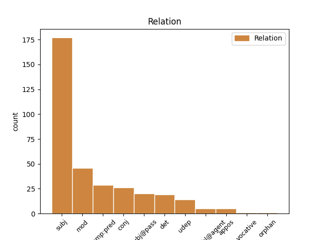
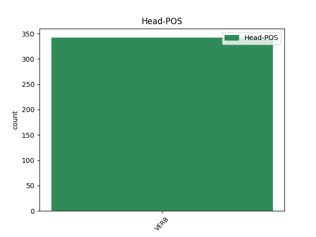
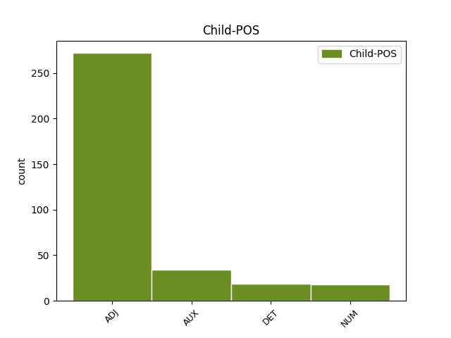

Distribution of features within this leaf



Agreement Rules sorted by frequency.
- When the dependent token is the subject(subj) of the head token, and the head token is VERB and the dependent token is ADJ.
1 Тъй тыи ADJ Pd Case=Nom|Gender=Masc|Number=Sing 3 subj _ ref=154
2 клюками _ _ _ _ 0 _ _ _
3 подпръ подъпрѣти VERB V- Case=Nom|Gender=Masc|Number=Sing|Strength=Strong|Tense=Past|VerbForm=Part|Voice=Act 0 _ _ _
4 ся _ _ _ _ 0 _ _ _
5 о _ _ _ _ 0 _ _ _
6 кони _ _ _ _ 0 _ _ _
7 и _ _ _ _ 0 _ _ _
8 скочи _ _ _ _ 0 _ _ _
9 къ _ _ _ _ 0 _ _ _
10 граду _ _ _ _ 0 _ _ _
11 Кыеву _ _ _ _ 0 _ _ _
1 притрепа _ _ _ _ 0 _ _ _
2 славу _ _ _ _ 0 _ _ _
3 дѣду _ _ _ _ 0 _ _ _
4 своему _ _ _ _ 0 _ _ _
5 Всеславу _ _ _ _ 0 _ _ _
6 а _ _ _ _ 0 _ _ _
7 самъ самъ ADJ Pd Case=Nom|Gender=Masc|Number=Sing 14 subj@pass _ ref=144
8 подъ _ _ _ _ 0 _ _ _
9 чрълеными _ _ _ _ 0 _ _ _
10 щиты _ _ _ _ 0 _ _ _
11 на _ _ _ _ 0 _ _ _
12 кровавѣ _ _ _ _ 0 _ _ _
13 травѣ _ _ _ _ 0 _ _ _
14 притрепанъ притрепати VERB V- Case=Nom|Gender=Masc|Number=Sing|Strength=Strong|Tense=Past|VerbForm=Part|Voice=Pass 0 _ _ _
15 литовскыми _ _ _ _ 0 _ _ _
16 мечи _ _ _ _ 0 _ _ _
1 а _ _ _ _ 0 _ _ _
2 затѣмь _ _ _ _ 0 _ _ _
3 аче _ _ _ _ 0 _ _ _
4 и _ _ _ _ 0 _ _ _
5 кдѣ _ _ _ _ 0 _ _ _
6 налѣзеть _ _ _ _ 0 _ _ _
7 ѹдареныи ударити VERB V- Case=Nom|Gender=Masc|Number=Sing|Strength=Weak|Tense=Past|VerbForm=Part|Voice=Pass 0 _ _ _
8 тъ тыи DET Pd Case=Nom|Gender=Masc|Number=Sing 7 det _ ref=65
9 своѥго _ _ _ _ 0 _ _ _
10 истьцѧ _ _ _ _ 0 _ _ _
11 кто _ _ _ _ 0 _ _ _
12 ѥго _ _ _ _ 0 _ _ _
13 ѹдарилъ _ _ _ _ 0 _ _ _
14 то _ _ _ _ 0 _ _ _
15 ꙗрославъ _ _ _ _ 0 _ _ _
16 былъ _ _ _ _ 0 _ _ _
17 ѹставилъ _ _ _ _ 0 _ _ _
18 ѹбити _ _ _ _ 0 _ _ _
19 и _ _ _ _ 0 _ _ _
1 и _ _ _ _ 0 _ _ _
2 по _ _ _ _ 0 _ _ _
3 семъ _ _ _ _ 0 _ _ _
4 ц҃рю _ _ _ _ 0 _ _ _
5 приспѣвшꙋ _ _ _ _ 0 _ _ _
6 со _ _ _ _ 0 _ _ _
7 всѣми _ _ _ _ 0 _ _ _
8 велможи _ _ _ _ 0 _ _ _
9 и _ _ _ _ 0 _ _ _
10 съ _ _ _ _ 0 _ _ _
11 избранʼными избьрати VERB V- Case=Ins|Gender=Masc|Number=Plur|Strength=Weak|Tense=Past|VerbForm=Part|Voice=Pass 0 _ _ _
12 своими свои ADJ Pt Case=Ins|Gender=Masc|Number=Plur|Person=3|Poss=Yes|Reflex=Yes 11 mod _ ref=313v12
13 и _ _ _ _ 0 _ _ _
14 нападе _ _ _ _ 0 _ _ _
15 на _ _ _ _ 0 _ _ _
16 тоуркы _ _ _ _ 0 _ _ _
1 ѡномѹ _ _ _ _ 0 _ _ _
2 же _ _ _ _ 0 _ _ _
3 въспрѧнѹвъшю въспрянути VERB V- Case=Dat|Gender=Masc|Number=Sing|Strength=Strong|Tense=Past|VerbForm=Part|Voice=Act 0 _ _ _
4 и _ _ _ _ 0 _ _ _
5 радѹ _ _ _ _ 0 _ _ _
6 бывъшю быти AUX V- Case=Dat|Gender=Masc|Number=Sing|Strength=Strong|Tense=Past|VerbForm=Part|Voice=Act 3 conj _ ref=101
7 скоро _ _ _ _ 0 _ _ _
8 въставъ _ _ _ _ 0 _ _ _
9 и _ _ _ _ 0 _ _ _
10 въжьгъ _ _ _ _ 0 _ _ _
11 свѣщю _ _ _ _ 0 _ _ _
12 иде _ _ _ _ 0 _ _ _
13 на _ _ _ _ 0 _ _ _
14 ѹказаноѥ _ _ _ _ 0 _ _ _
15 ѥмѹ _ _ _ _ 0 _ _ _
16 мѣсто _ _ _ _ 0 _ _ _
1 биѥть _ _ _ _ 0 _ _ _
2 ли _ _ _ _ 0 _ _ _
3 не _ _ _ _ 0 _ _ _
4 смыслѧ съмыслити VERB V- Case=Nom|Gender=Masc|Number=Sing|Strength=Strong|Tense=Pres|VerbForm=Part|Voice=Act 0 _ _ _
5 пьꙗнъ пияныи ADJ A- Case=Nom|Degree=Pos|Gender=Masc|Number=Sing|Strength=Strong 4 conj _ ref=62
6 а _ _ _ _ 0 _ _ _
7 без _ _ _ _ 0 _ _ _
8 вины _ _ _ _ 0 _ _ _
9 то _ _ _ _ 0 _ _ _
10 ꙗкоже _ _ _ _ 0 _ _ _
11 въ _ _ _ _ 0 _ _ _
12 свободнѣмь _ _ _ _ 0 _ _ _
13 платежь _ _ _ _ 0 _ _ _
14 тако _ _ _ _ 0 _ _ _
15 же _ _ _ _ 0 _ _ _
16 и _ _ _ _ 0 _ _ _
17 в _ _ _ _ 0 _ _ _
18 закупѣ _ _ _ _ 0 _ _ _
1 се _ _ _ _ 0 _ _ _
2 оуже _ _ _ _ 0 _ _ _
3 г҃и _ _ _ _ 0 _ _ _
4 ц҃рю _ _ _ _ 0 _ _ _
5 пѧт пять NUM Ma Case=Nom|Gender=Fem|Number=Sing 7 subj _ ref=302r7
6 мсць _ _ _ _ 0 _ _ _
7 прошло проити VERB V- Aspect=Res|Case=Nom|Gender=Neut|Number=Sing|Strength=Strong|VerbForm=Part|Voice=Act 0 _ _ _
8 ѿнелѣже _ _ _ _ 0 _ _ _
9 начахомъ _ _ _ _ 0 _ _ _
10 брати _ _ _ _ 0 _ _ _
11 сѧ _ _ _ _ 0 _ _ _
12 с _ _ _ _ 0 _ _ _
13 тꙋрʼкы _ _ _ _ 0 _ _ _
14 просѧще _ _ _ _ 0 _ _ _
15 млсти _ _ _ _ 0 _ _ _
16 б҃жїа _ _ _ _ 0 _ _ _
1 кто _ _ _ _ 0 _ _ _
2 бо _ _ _ _ 0 _ _ _
3 не _ _ _ _ 0 _ _ _
4 почюдить _ _ _ _ 0 _ _ _
5 сѧ _ _ _ _ 0 _ _ _
6 ѹбо _ _ _ _ 0 _ _ _
7 бл҃женѹѹмѹ _ _ _ _ 0 _ _ _
8 семѹ _ _ _ _ 0 _ _ _
9 ѥже _ _ _ _ 0 _ _ _
10 въ _ _ _ _ 0 _ _ _
11 такои _ _ _ _ 0 _ _ _
12 тьмьнѣ _ _ _ _ 0 _ _ _
13 пещерѣ _ _ _ _ 0 _ _ _
14 пребываꙗ прѣбывати VERB V- Case=Nom|Gender=Masc|Number=Sing|Strength=Strong|Tense=Pres|VerbForm=Part|Voice=Act 0 _ _ _
15 ѥдинъ единъ NUM Ma Case=Nom|Gender=Masc|Number=Sing 14 comp:pred _ ref=19
16 мъножьства _ _ _ _ 0 _ _ _
17 пълковъ _ _ _ _ 0 _ _ _
18 невидимыхъ _ _ _ _ 0 _ _ _
19 бѣсовъ _ _ _ _ 0 _ _ _
20 не _ _ _ _ 0 _ _ _
21 ѹбоꙗ _ _ _ _ 0 _ _ _
22 сѧ _ _ _ _ 0 _ _ _
23 нъ _ _ _ _ 0 _ _ _
24 крѣпъко _ _ _ _ 0 _ _ _
25 стоꙗ _ _ _ _ 0 _ _ _
26 ꙗко _ _ _ _ 0 _ _ _
27 храбъръ _ _ _ _ 0 _ _ _
28 сильнъ _ _ _ _ 0 _ _ _
29 б҃а _ _ _ _ 0 _ _ _
30 молꙗаше _ _ _ _ 0 _ _ _
31 и _ _ _ _ 0 _ _ _
32 г҃а _ _ _ _ 0 _ _ _
33 иіс _ _ _ _ 0 _ _ _
34 х҃а _ _ _ _ 0 _ _ _
35 на _ _ _ _ 0 _ _ _
36 помощь _ _ _ _ 0 _ _ _
37 себе _ _ _ _ 0 _ _ _
38 призывающа _ _ _ _ 0 _ _ _
1 аще _ _ _ _ 0 _ _ _
2 ли _ _ _ _ 0 _ _ _
3 бѹдꙗше _ _ _ _ 0 _ _ _
4 пакы _ _ _ _ 0 _ _ _
5 братъ _ _ _ _ 0 _ _ _
6 омрачениѥ _ _ _ _ 0 _ _ _
7 бѣсовьскымь _ _ _ _ 0 _ _ _
8 ср҃дце _ _ _ _ 0 _ _ _
9 покръвено _ _ _ _ 0 _ _ _
10 имыи _ _ _ _ 0 _ _ _
11 то _ _ _ _ 0 _ _ _
12 сии _ _ _ _ 0 _ _ _
13 станꙗше _ _ _ _ 0 _ _ _
14 мьнꙗ _ _ _ _ 0 _ _ _
15 ѧко _ _ _ _ 0 _ _ _
16 о _ _ _ _ 0 _ _ _
17 иномь _ _ _ _ 0 _ _ _
18 бесѣдѹють _ _ _ _ 0 _ _ _
19 самъ _ _ _ _ 0 _ _ _
20 чистъ чистыи ADJ A- Case=Nom|Degree=Pos|Gender=Masc|Number=Sing|Strength=Strong 22 comp:pred _ ref=20
21 сꙗ _ _ _ _ 0 _ _ _
22 творꙗ творити VERB V- Case=Nom|Gender=Masc|Number=Sing|Strength=Strong|Tense=Pres|VerbForm=Part|Voice=Act 0 _ _ _
23 дондеже _ _ _ _ 0 _ _ _
24 бл҃женыи _ _ _ _ 0 _ _ _
25 обличашети _ _ _ _ 0 _ _ _
26 и _ _ _ _ 0 _ _ _
27 и _ _ _ _ 0 _ _ _
28 епитимиѥю _ _ _ _ 0 _ _ _
29 того _ _ _ _ 0 _ _ _
30 ѹтвьрдꙗше _ _ _ _ 0 _ _ _
31 и _ _ _ _ 0 _ _ _
32 отъпѹстꙗше _ _ _ _ 0 _ _ _
1 ѣдѹщю ѣхати VERB V- Case=Dat|Gender=Masc|Number=Sing|Strength=Strong|Tense=Pres|VerbForm=Part|Voice=Act 0 _ _ _
2 бо _ _ _ _ 0 _ _ _
3 ѥмѹ _ _ _ _ 0 _ _ _
4 въ _ _ _ _ 0 _ _ _
5 манастырь _ _ _ _ 0 _ _ _
6 свои _ _ _ _ 0 _ _ _
7 нощи _ _ _ _ 0 _ _ _
8 же _ _ _ _ 0 _ _ _
9 сѹщи быти AUX V- Case=Dat|Gender=Fem|Number=Sing|Strength=Strong|Tense=Pres|VerbForm=Part|Voice=Act 1 mod _ ref=20
10 тѣмь _ _ _ _ 0 _ _ _
11 же _ _ _ _ 0 _ _ _
12 и _ _ _ _ 0 _ _ _
13 се _ _ _ _ 0 _ _ _
14 видѣ _ _ _ _ 0 _ _ _
15 свѣтъ _ _ _ _ 0 _ _ _
16 надъ _ _ _ _ 0 _ _ _
17 манастырьмь _ _ _ _ 0 _ _ _
18 тъкъмо _ _ _ _ 0 _ _ _
19 бл҃женаго _ _ _ _ 0 _ _ _
20 оц҃а _ _ _ _ 0 _ _ _
21 нашего _ _ _ _ 0 _ _ _
22 ѳеѡдосиꙗ _ _ _ _ 0 _ _ _
1 и _ _ _ _ 0 _ _ _
2 оба оба NUM Ma Case=Nom|Gender=Masc|Number=Dual 3 subj@pass _ ref=true
3 положена положити VERB V- Case=Nom|Gender=Masc|Number=Dual|Strength=Strong|Tense=Past|VerbForm=Part|Voice=Pass 0 _ _ _
4 ѹ _ _ _ _ 0 _ _ _
5 ст҃го _ _ _ _ 0 _ _ _
6 георгиꙗ _ _ _ _ 0 _ _ _
7 въ _ _ _ _ 0 _ _ _
8 манастꙑри _ _ _ _ 0 _ _ _
1 ѡни _ _ _ _ 0 _ _ _
2 же _ _ _ _ 0 _ _ _
3 ꙗко _ _ _ _ 0 _ _ _
4 землꙗ _ _ _ _ 0 _ _ _
5 жажющиꙗ _ _ _ _ 0 _ _ _
6 воды _ _ _ _ 0 _ _ _
7 тако _ _ _ _ 0 _ _ _
8 приимаахѹ _ _ _ _ 0 _ _ _
9 словеса _ _ _ _ 0 _ _ _
10 ѥго _ _ _ _ 0 _ _ _
11 приносꙗще приносити VERB V- Case=Nom|Gender=Masc|Number=Plur|Strength=Strong|Tense=Pres|VerbForm=Part|Voice=Act 0 _ _ _
12 трѹдовъ _ _ _ _ 0 _ _ _
13 своихъ _ _ _ _ 0 _ _ _
14 плоды _ _ _ _ 0 _ _ _
15 къ _ _ _ _ 0 _ _ _
16 господѹ _ _ _ _ 0 _ _ _
17 овъ овъ ADJ Px Case=Nom|Gender=Masc|Number=Sing 11 appos _ ref=20
18 съто _ _ _ _ 0 _ _ _
19 овъ _ _ _ _ 0 _ _ _
20 же _ _ _ _ 0 _ _ _
21 ѯ҃ _ _ _ _ 0 _ _ _
Disagree Examples:
1 а _ _ _ _ 0 _ _ _
2 ꙗзъ _ _ _ _ 0 _ _ _
3 ждалъ жьдати VERB V- Aspect=Res|Case=Nom|Gender=Masc|Number=Sing|Strength=Strong|VerbForm=Part|Voice=Act 0 _ _ _
4 в _ _ _ _ 0 _ _ _
5 новѣгородѣ _ _ _ _ 0 _ _ _
6 двѣ дъва NUM Ma Case=Acc|Gender=Fem|Number=Dual 3 udep _ ref=2
7 недли _ _ _ _ 0 _ _ _
8 посла _ _ _ _ 0 _ _ _
9 татарьскаго _ _ _ _ 0 _ _ _
10 ширвашина _ _ _ _ 0 _ _ _
11 асамъ _ _ _ _ 0 _ _ _
12 бѣга _ _ _ _ 0 _ _ _
1 чюнеръ _ _ _ _ 0 _ _ _
2 же _ _ _ _ 0 _ _ _
3 град _ _ _ _ 0 _ _ _
4 есть _ _ _ _ 0 _ _ _
5 на _ _ _ _ 0 _ _ _
6 ѡстровꙋ _ _ _ _ 0 _ _ _
7 на _ _ _ _ 0 _ _ _
8 каменомъ _ _ _ _ 0 _ _ _
9 не _ _ _ _ 0 _ _ _
10 дѣланъ дѣлати VERB V- Case=Nom|Gender=Masc|Number=Sing|Strength=Strong|Tense=Past|VerbForm=Part|Voice=Pass 0 _ _ _
11 ничим ничьто ADJ Px Case=Ins|Gender=Neut|Number=Sing 10 comp:obl@agent _ ref=7
12 бг҃мь _ _ _ _ 0 _ _ _
13 сътворенъ _ _ _ _ 0 _ _ _
1 а _ _ _ _ 0 _ _ _
2 стоалъ стояти VERB V- Aspect=Res|Case=Nom|Gender=Masc|Number=Sing|Strength=Strong|VerbForm=Part|Voice=Act 0 _ _ _
3 подъ _ _ _ _ 0 _ _ _
4 городомъ _ _ _ _ 0 _ _ _
5 два дъва NUM Ma Case=Acc|Gender=Masc|Number=Dual 2 udep _ ref=22
6 годꙋ _ _ _ _ 0 _ _ _
1 равно равьныи ADJ A- Case=Acc|Degree=Pos|Gender=Neut|Number=Sing|Strength=Strong 13 mod _ ref=72.18
2 другаго _ _ _ _ 0 _ _ _
3 свѣщанья _ _ _ _ 0 _ _ _
4 бывшаго _ _ _ _ 0 _ _ _
5 при _ _ _ _ 0 _ _ _
6 с҃тославѣ _ _ _ _ 0 _ _ _
7 велицѣмь _ _ _ _ 0 _ _ _
8 кнѧзи _ _ _ _ 0 _ _ _
9 рустѣмь _ _ _ _ 0 _ _ _
10 и _ _ _ _ 0 _ _ _
11 при _ _ _ _ 0 _ _ _
12 свѣналъдѣ _ _ _ _ 0 _ _ _
13 писано пьсати VERB V- Case=Nom|Gender=Neut|Number=Sing|Strength=Strong|Tense=Past|VerbForm=Part|Voice=Pass 0 _ _ _
14 при _ _ _ _ 0 _ _ _
15 фефелѣ _ _ _ _ 0 _ _ _
16 синкелѣ _ _ _ _ 0 _ _ _
17 и _ _ _ _ 0 _ _ _
18 к _ _ _ _ 0 _ _ _
19 ивану _ _ _ _ 0 _ _ _
20 нарицаемому _ _ _ _ 0 _ _ _
21 цѣмьскию _ _ _ _ 0 _ _ _
22 ц҃рю _ _ _ _ 0 _ _ _
23 гречьскому _ _ _ _ 0 _ _ _
24 въ _ _ _ _ 0 _ _ _
25 дерестрѣ _ _ _ _ 0 _ _ _
26 мцса _ _ _ _ 0 _ _ _
27 июлѧ _ _ _ _ 0 _ _ _
28 въ _ _ _ _ 0 _ _ _
29 д҃і _ _ _ _ 0 _ _ _
30 индикта _ _ _ _ 0 _ _ _
1 симъ сии ADJ Pd Case=Ins|Gender=Neut|Number=Sing 3 udep _ ref=109.11
2 же _ _ _ _ 0 _ _ _
3 спуще сыпати VERB V- Case=Nom|Gender=Masc|Number=Plur|Strength=Strong|Tense=Pres|VerbForm=Part|Voice=Act 0 _ _ _
4 имъ _ _ _ _ 0 _ _ _
5 корсунѧне _ _ _ _ 0 _ _ _
6 подъкопавше _ _ _ _ 0 _ _ _
7 стѣну _ _ _ _ 0 _ _ _
8 градьскую _ _ _ _ 0 _ _ _
9 крадуще _ _ _ _ 0 _ _ _
10 сыплемую _ _ _ _ 0 _ _ _
11 перьсть _ _ _ _ 0 _ _ _
12 и _ _ _ _ 0 _ _ _
13 ношаху _ _ _ _ 0 _ _ _
14 к _ _ _ _ 0 _ _ _
15 собѣ _ _ _ _ 0 _ _ _
16 въ _ _ _ _ 0 _ _ _
17 градъ _ _ _ _ 0 _ _ _
18 сыплюще _ _ _ _ 0 _ _ _
19 посредѣ _ _ _ _ 0 _ _ _
20 града _ _ _ _ 0 _ _ _